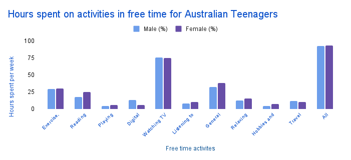
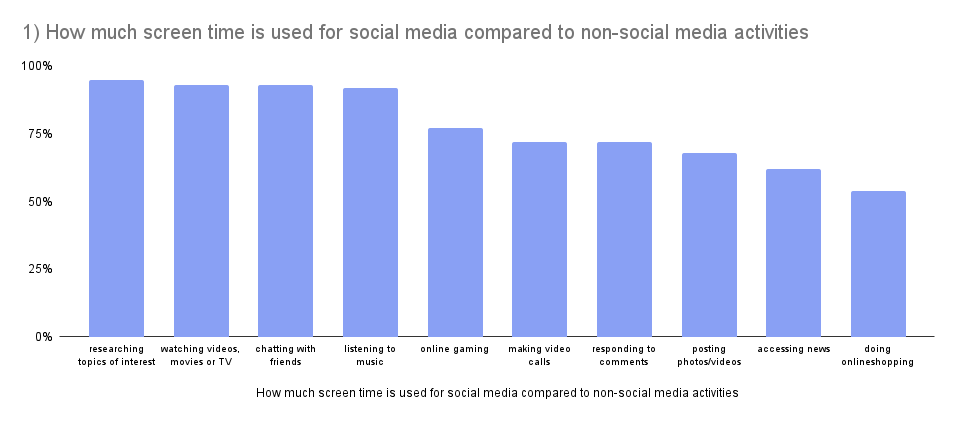
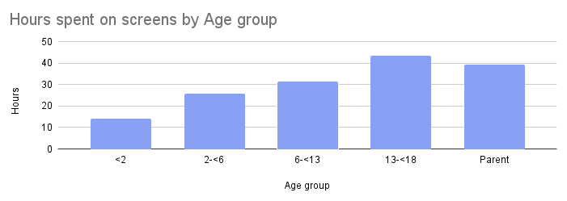

Screen Time
Analysis: What is screen time and why is it harmful?
What do Australians use screens for?
According to research by the eSafety Commissioner, it was found that many within Australia
use the Internet to research areas in which they have an interest, with 95% of people using
it for that purpose. However, social media did have a significant prevalence, with 5 out of
the 10 listed activities utilising a form of social media, with more than 70% of people
using technology daily. Out of these 5, the most popular social media usage was chatting
with friends with 93%, which also indicates the interconnectedness of social media and the
connections made but also the dangers of talking to strangers and how those with malicious
intentions can often access these people's accounts and begin chatting. Hence, Social media
seems to be largely prevalent within the internet but not the most significant usage of the
internet, with research being higher due to the target audience of social media being
teenagers who have to complete assignments and research being a significant necessity within
assignments.
Social media has managed to spread worldwide and has impacted multiple different age
groups,
but which one is the most prominent?
According to the Australian Child Health Poll, it was found that adolescents were the most
likely to use social media for 43.6 hours weekly,
likely due to the technological reliance on the current era and the usage of screens to
assist in everyday life, such as school.
However, it was found that parents are the second most likely to be using screens, which was
not expected. On average, parents were using screens 39.6 hours a week of screen time,
indicating that age may not directly impact social media usage, emphasising how social media
has been created to a simplistic form so that.
hint: click a picture to make it bigger
 hours spent on activities in free time for Australian teenagers  how much screen time is spent on social media compared to non-social media activities  hours spent on screens by age group